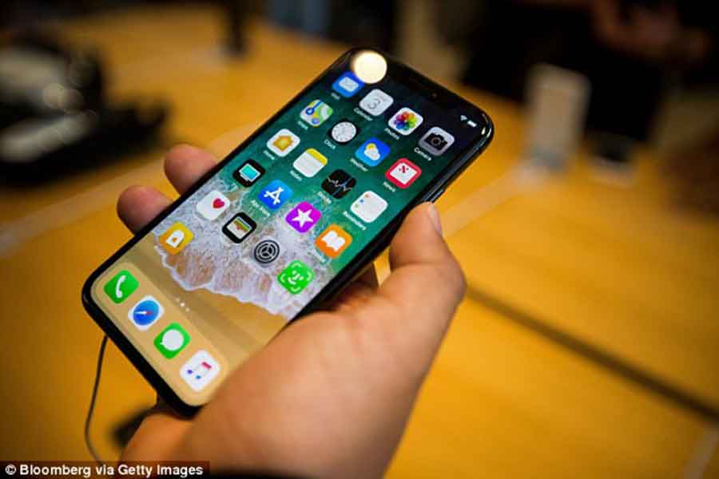

Positives vary between: Always call: Always be in touch with anyone who knows your mobile phone number and can call you, whether you are in your country or if you are outside it. Internet: You can use the Internet anytime, anywhere, and if you need to verify your email, you can do this when traveling abroad or within your office. You can also respond to important emails or messages from your mobile phone itself. As for the negatives, the most serious risks are: Health risks: Finnish radiologists have warned against leniency or minimizing the risks from mobile phone radiation. A study conducted by these experts has reached unsuspecting results for mobile phone users, as mobile phone damage has been discovered by identifying the biological changes caused by phone radiation in The performance of body cells, and a radiologist said that the radiation emitted by the mobile affects in one way or another the protein system in the cells of the human body, which exposes these cells to change the way they work and their effectiveness, and added that the mobile phone radiation can change the function of the cells, which leads to Disrupting or causing chemical tensions in the cell structure, which contributes to the possibility of developing tumors, especially in the brain region, and that the radiation from the cellular devices directly affects the "actin" protein, which is one of the main parts of the cell and its structure. Do I really need to turn off the mobile phone on the plane? Passengers are usually told that a mobile phone and other portable personal electronic devices lead to interference on sensitive electronic devices and systems on the plane, causing a risk to flight safety, and a study that issued its decision on October 31, 2013 confirmed that airlines can allow For its passengers using portable electronic tools during all stages of flying but with some restrictions.
